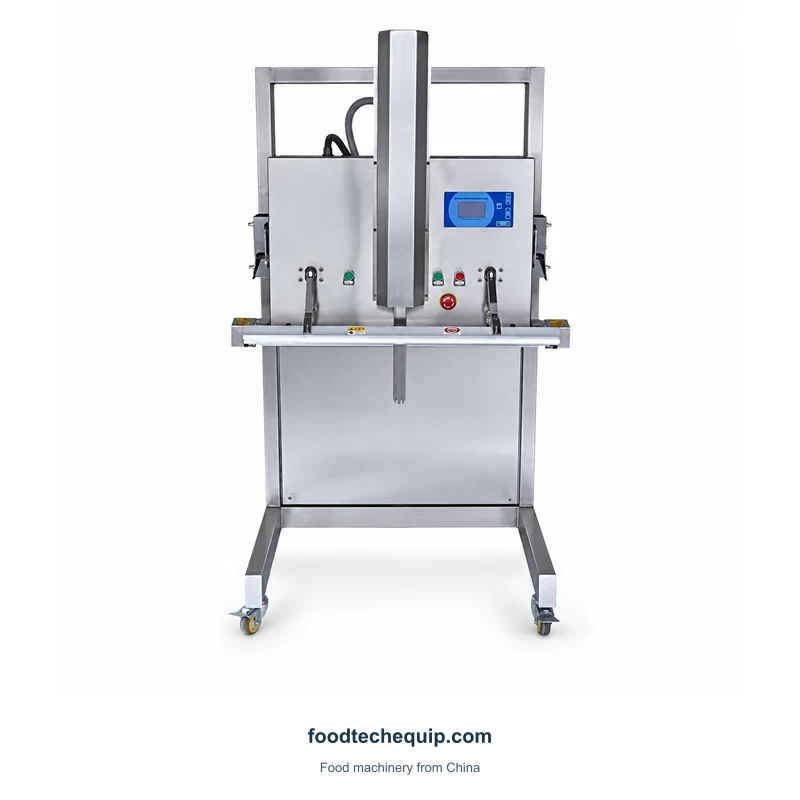
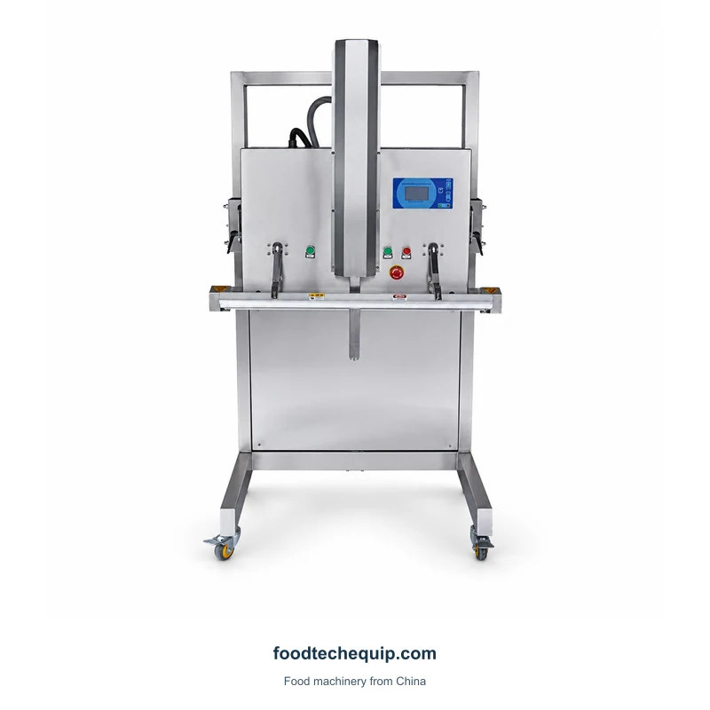
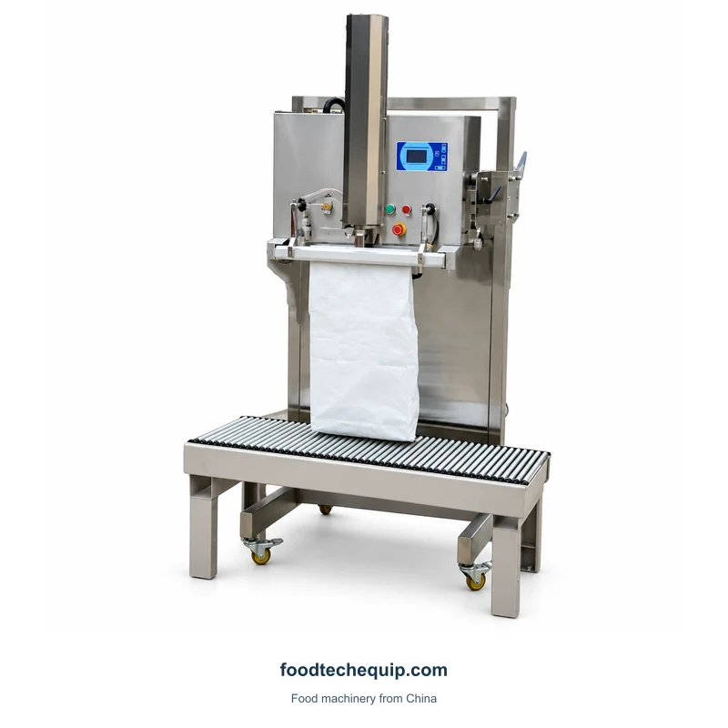
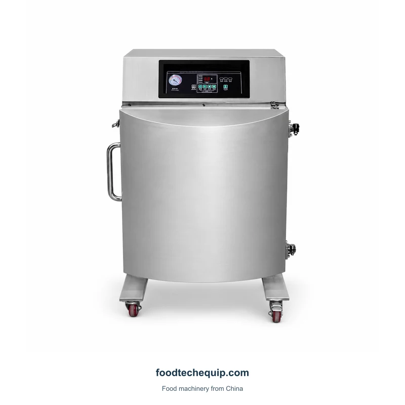
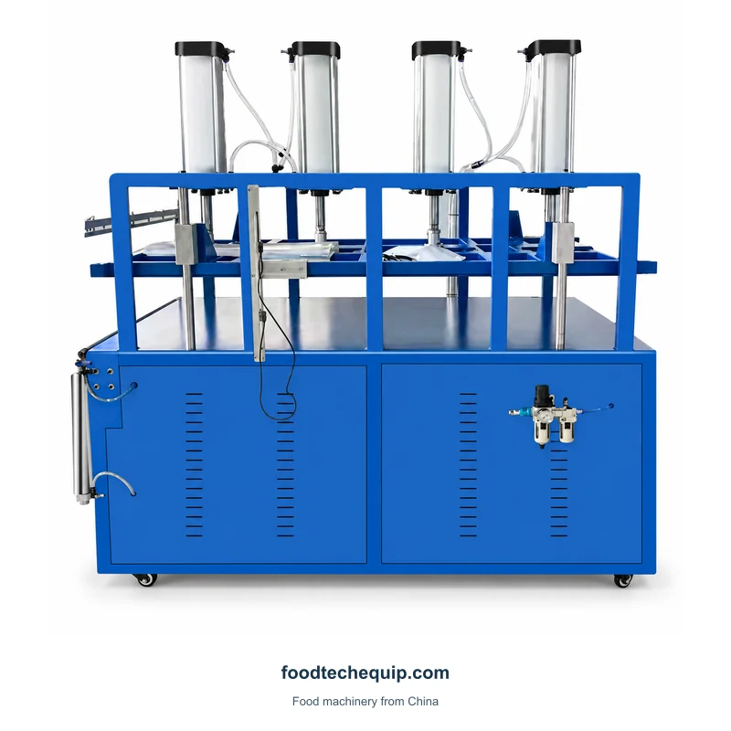

التعبئة بالتفريغ
آلة رأسية للتعبئة بالتفريغ باستخدام شفط خارجي
آلة رأسية للتعبئة بالتفريغ باستخدام شفط خارجي وطاولة بكرات تسند العبوة في موضع العمل.
عرض المعداتقارن التصاميم باستخدام الكيس المملوء والصينية أو الدعامة إن وجدت. في آلات الحجرة، افحص الفراغ حول العبوة داخل نطاق العمل. وفي آلات الشفط الخارجي، تحقّق من كيفية إسناد الكيس عند قضيب اللحام. قارن سهولة التحميل وطريقة إخراج العبوة النهائية.
آلة رأسية للتعبئة بالتفريغ باستخدام شفط خارجي وطاولة بكرات تسند العبوة في موضع العمل.
عرض المعدات
آلة أرضية للحام الأكياس بالتفريغ، مزودة بطاولة إسناد أمامية وقضيب لحام علوي.
عرض المعدات
مانع تسرب الهواء المنضدي مع سطح دعم أمامي وعناصر تحكم علوية.
عرض المعدات
آلة تعبئة وتغليف بالتفريغ مع شفط خارجي، قابلة للإمالة ومركبة على خزانة بعجلات.
عرض المعدات
ماكينة تعبئة مفرغة الهواء لتعبئة الأرز والحبوب.
عرض المعدات
ماكينة تعبئة وتغليف مفرغة الهواء خارجية قابلة لتعديل الارتفاع مع قسم عمل أمامي.
عرض المعدات
ماكينة تعبئة وتغليف مفرغة الهواء خارجية ذات رافعة رأسية وقضيب إغلاق أمامي.
عرض المعدات
آلة رأسية للتعبئة والتغليف بالتفريغ مع شفط خارجي. قارن المواصفات الكهربائية للطرازين QDZ-600F وVS600 قبل طلب عرض السعر.
عرض المعدات
آلة تعبئة وتغليف بالتفريغ للأكياس البلاستيكية، مزودة بشفط خارجي ووحدة رفع ومنطقة لحام أمامية. جهد التغذية المذكور 380 V.
عرض المعدات
آلة تعبئة مفرغة الهواء ذات حجرة مزدوجة مع منطقتي عمل وغطاء متحرك.
عرض المعدات
ماكينة تعبئة وتغليف مفرغة الهواء من حجرة واحدة بغطاء شفاف وضوابط أمامية.
عرض المعدات
آلة طاولة للتعبئة والتغليف بالتفريغ مع شفط خارجي ووحدة لحام أمامية وسطح لإسناد العبوة.
عرض المعدات
معدات تعبئة وتغليف بالتفريغ مع شفط خارجي، متاحة بتصميم رأسي أو مزود بوحدة رفع.
عرض المعدات
آلة تعبئة وتغليف مفرغة الهواء خارجية قائمة على الأرض مع مجموعة رفع وقسم إغلاق أمامي.
عرض المعدات
آلة تعبئة مفرغة من الهواء بخزانة ذات باب أمامي للغرفة وعناصر تحكم علوية.
عرض المعدات
آلة تعبئة وتغليف مفرغة بالحزام المستمر مع تحميل ناقل وغطاء حجرة وأدوات تحكم مرتفعة.
عرض المعدات
آلة تعبئة مفرغة ذات خزانة تحميل أمامية مع أدوات تحكم علوية وغطاء من الفولاذ المقاوم للصدأ.
عرض المعدات
آلة تعبئة وتغليف مفرغة الضغط بإطار علوي وأسطوانات هوائية وقاعدة خزانة.
عرض المعدات
آلة رأسية للتعبئة والتغليف بالتفريغ مع شفط خارجي ومسند قابل للضبط للأكياس البلاستيكية. الوزن المذكور للآلة 100 kg.
عرض المعدات
آلة تعبئة وتغليف مفرغة الضغط بإطار هوائي علوي.
عرض المعداتجرّب كلمة رئيسية مختلفة أو امسح عوامل التصفية.
بالنسبة لتخطيطات الغرفة، قم بتوفير أبعاد المنتج المعبأ بالكامل وترتيب التحميل. بالنسبة للتخطيطات الخارجية، قم بوصف الدعم في موضع الختم.
توفير متطلبات بناء الأكياس وختمها مع عينات العبوات الفعلية. ناقش أي متطلبات تتعلق بمدة صلاحية المنتج كجزء من عملية المنتج والتعبئة الأوسع.
| منطقة التحديد | ماذا تقارن | ما الذي ينبغي تقديمه |
|---|---|---|
| الغرفة | الحزمة الكاملة داخل منطقة العمل | المغلف المملوء ونمط التحميل |
| خارجي | الدعم خارج قسم الختم | فتحة الكيس وارتفاع الدعامة |
| الحزام أو الخزانة | الوصول إلى الحزمة ونقلها | التباعد والتحميل وتسلسل التجميع |
يجب أن تتناسب العبوة المملوءة مع ترتيب العمل وأن تظل مدعومة أثناء التحميل. ناقش متطلبات فتح الكيس وإغلاقه إلى جانب مظروف العبوة الكاملة. تعامل مع أي مهمة منفصلة لإغلاق الحقيبة كخطوة عملية خاصة بها.